Tabelas - parte 3
Em aulas anteriores, vimos como definir tabelas em páginas HTML e também como realizar a mesclagem de células. Nesta aula, vamos ver a aplicação de propriedades CSS na estilização de tabelas e conhecer mais detalhes de marcação de tabelas através dos elementos caption, thead, tfoot e tbody.
Estilização de tabelas
Vamos relembrar os elementos para marcação de tabelas vistos até aqui:
- table: define uma tabela.
- tr: define uma linha.
- td: define uma célula de conteúdo.
- th: define uma célula de caeçalho.
A seguir, é apresentado um exemplo de uso destes elementos.
<table>
<tr>
<th>Nação</th>
<th>População</th>
<th>IDH</th>
<th>PIB (milhões de U$$)</th>
<th>PIB per capita (U$$)</th>
<th>Gini</th>
</tr>
<tr>
<td>Brasil</td>
<td>190.755.799</td>
<td>0,718</td>
<td>2.569.471,00</td>
<td>12.789</td>
<td>51,9</td>
</tr>
<tr>
<td>Chile</td>
<td>17.423.214</td>
<td>0,819</td>
<td>248.411,00</td>
<td>14.278</td>
<td>50,3</td>
</tr>
<tr>
<td>EUA</td>
<td>315.791.284</td>
<td>0,956</td>
<td>15.094.025,00</td>
<td>48.387</td>
<td>47,7</td>
</tr>
<tr>
<td>Canadá</td>
<td>34.674.708</td>
<td>0,966</td>
<td>1.736.869,00</td>
<td>50.435</td>
<td>32,1</td>
</tr>
<tr>
<td>África do Sul</td>
<td>50.738.255</td>
<td>0,629</td>
<td>408.074,00</td>
<td>8.066</td>
<td>63,1</td>
</tr>
<tr>
<td>Argentina</td>
<td>40.117.096</td>
<td>0,811</td>
<td>435.200,00</td>
<td>10.639</td>
<td>45,8</td>
</tr>
</table>
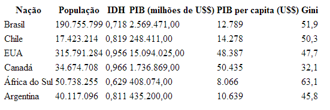
Como pode ser visto na figura, a formatação padrão do navegador não é muito atraente. Estilos CSS podem ser utilizados para melhorar a apresentação visual da tabela. Vamos começar aplicando bordas ao elemento table:
table { border: solid 2px black; }
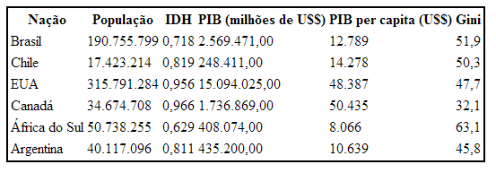
Como podemos ver pelo exemplo anterior, a propriedade border aplicada ao elemento table estiliza apenas a borda ao redor da tabela, não tendo qualquer efeito sobre as bordas das células. Vamos, então, verificar qual é o resultado ao aplicar um estilo de borda ao elemento td:
table { border: solid 2px black; }
td { border: solid 1px black; }
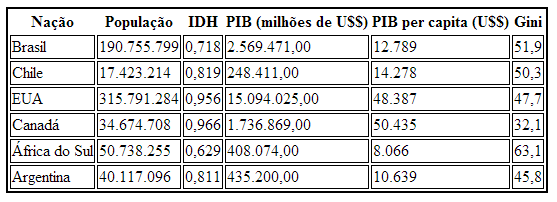
Com a última alteração, podemos ver que quase todas as células receberam uma borda. A exceção ficou por conta das células da primeira linha da tabela. Este comportamento é explicado pelo uso de elementos th na linha, e portanto, as regras CSS definidas para o elemento td não foram aplicadas. Para aproveitar o estilo de borda já definido para o elemento td, basta acrescentar o elemento th ao seletor da regra CSS:
table { border: solid 2px black; }
td, th { border: solid 1px black; }
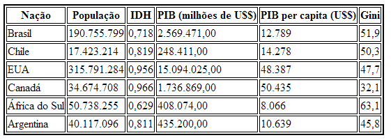
Ao analisar as últimas figuras, podemos ver que há um espaço entre as células da tabela bem como entre as células e a borda da tabela. A ocorrência deste espaço é controlada pela propriedade border-collapse, a qual suporta os valores collapse, separate (valor padrão) e inherit. Vamos utilizar esta propriedade para remover este espaçamento:
table {
border: solid 2px black;
border-collapse: collapse;
}
td, th { border: solid 1px black; }
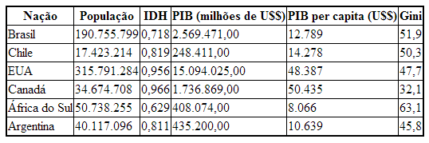
A propriedade padding também é aplicável às células de uma tabela:
table {
border: solid 2px black;
border-collapse: collapse;
}
td, th {
border: solid 1px black;
padding: 2px 6px 2px 6px;
}
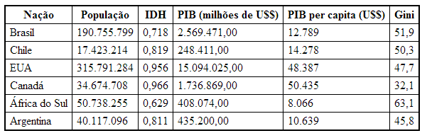
Além de bordas e espaçamento, a CSS também permite a estilização do fundo de uma tabela. Neste caso, as propriedades de background podem ser aplicadas aos elementos table, tr, td e th. Vamos utilizar a propriedade background-color para destacar as células de cabeçalho:
table {
border: solid 2px black;
border-collapse: collapse;
}
td, th {
border: solid 1px black;
padding: 2px 6px 2px 6px;
}
th {
background-color: pink;
}
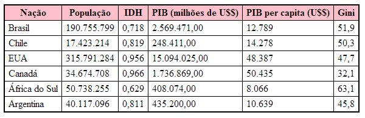
Para a formatação do texto, vamos começar pela fonte utilizada na tabela:
table {
border: solid 2px black;
border-collapse: collapse;
font-family: arial;
font-size: 85%;
}
td, th {
border: solid 1px black;
padding: 2px 6px 2px 6px;
}
th {
background-color: pink;
}
Desta forma, os elementos tr, td e th herdarão as propriedades de fonte definidas para table.
Agora vamos definir alinhamento de texto à esquerda para a primeira coluna e alinhamento de texto à direita para as demais colunas. As células de cabeçalho permancerão com alinhamento padrão:
table {
border: solid 2px black;
border-collapse: collapse;
font-family: arial;
font-size: 85%;
}
td, th {
border: solid 1px black;
padding: 2px 6px 2px 6px;
}
th {
background-color: pink;
}
td {
text-align: right;
}
td:first-child {
text-align: left;
}
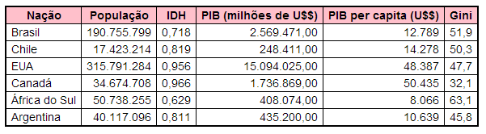
A propriedade vertical-align permite, através dos valores top, middle e bottom, definir a posição vertical do conteúdo de uma tabela. Veja o exemplo a seguir:
table { border-collapse: collapse; }
td {
border: solid 1px black;
padding: 4px;
vertical-align: top;
}
<table>
<tr>
<td rowspan="3">Região Sul</td>
<td>RS</td>
</tr>
<tr>
<td>SC</td>
</tr>
<tr>
<td>PR</td>
</tr>
</table>
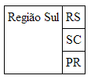
Mais elementos de tabela
O elemento caption permite a definição de títulos de tabelas. Por padrão, esse elemento é renderizado com alinhamento centralizado e acima da tabela, mas é possível utilizar propridades CSS para alterar essa configuração.
Os elementos thead e tfoot são utilizados para agrupar, respectivamente, linhas de cabeçalho e linhas de rodapé de uma tabela. Estes elementos são úteis quando trabalhamos com tabelas extensas pois possibilitam que o navegador ofereça rolagem apenas no corpo da tabela enquanto mantém o cabeçalho e o rodapé visíveis. No caso de impressão, este elementos fazem com que o cabeçalho e o rodapé da tabela sejam impressos em cada uma das páginas. Além disso, tais elementos deixam a marcação com uma semântica mais rica e ainda podem facilitar a estilização da tabela.
Caso thead e tfoot sejam utilizados, as linhas de conteúdo da tabela deverão estar contidas no elemento tbody.
No próximo exemplo é demonstrado o uso destes elementos. Repare que o elemento tfoot deve ser declarado após thead e antes de tbody.
table{
border: solid 2px black;
}
.valor{
text-align: right;
}
td, th {
border: solid 1px black;
padding: 2px 4px 2px 4px;
}
thead{
background-color: silver;
}
tfoot{
background-color: pink;
}
tfoot th:first-child{
text-align: left;
}
<table>
<caption>Brasil - PIB por região (2011)</caption>
<thead>
<tr>
<th>Região</th>
<th>PIB (milhões de R$)</th>
</tr>
</thead>
<tfoot>
<tr>
<th>TOTAL</th>
<th class="valor">4.143.013</th>
</tr>
</tfoot>
<tbody>
<tr>
<td>Sudeste</td>
<td class="valor">2.295.690</td>
</tr>
<tr>
<td>Sul</td>
<td class="valor">672.049</td>
</tr>
<tr>
<td>Nordeste</td>
<td class="valor">555.325</td>
</tr>
<tr>
<td>Centro-oeste</td>
<td class="valor">396.411</td>
</tr>
<tr>
<td>Norte</td>
<td class="valor">223.538</td>
</tr>
</tbody>
</table>
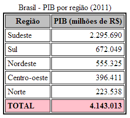
Exercícios
1) Crie e estilize cada uma das tabelas apresentadas nas figuras a seguir:
a) 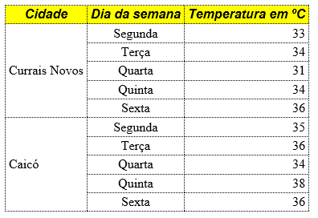
b) 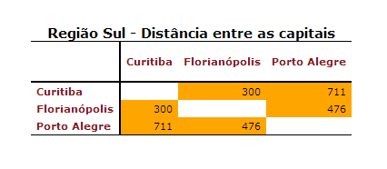
2) Dado o código HTML de tabela abaixo, aplique estilos para deixar a tabela com o visual apresentado na figura seguinte. Faça o que se pede sem alterar a marcação HTML da tabela. As imagens ecnontram-se no arquivo icones.zip.
<table>
<caption>Viação Alfa</caption>
<thead>
<tr>
<th></th>
<th class="hora">Hora de saída</th>
<th class="hora">Hora de chegada</th>
<th class="classe">Classe do ônibus</th>
<th class="tarifa">Tarifa</th>
</tr>
<tfoot>
<tr>
<td colspan="5">Vigência: 02/04/2014 a 15/06/2014</td>
</tr>
</tfoot>
<tbody>
<tr>
<th>Cidade A</th>
<td>06:45</td>
<td>14:30</td>
<td>Convencional</td>
<td>80,00</td>
</tr>
<tr>
<th>Cidade B</th>
<td>12:30</td>
<td>21:00</td>
<td>Convencional</td>
<td>100,00</td>
</tr>
<tr>
<th>Cidade C</th>
<td>19:00</td>
<td>06:00</td>
<td>Leito</td>
<td>150,00</td>
</tr>
</tbody>
</thead>
</table>
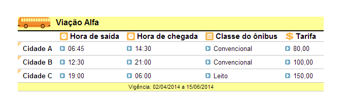
Referências
- SILVA, Maurício Samy. Construindo sites com CSS e (X)HTML: sites controlados por folhas de estilo em cascata. São Paulo: Novatec, 2008.